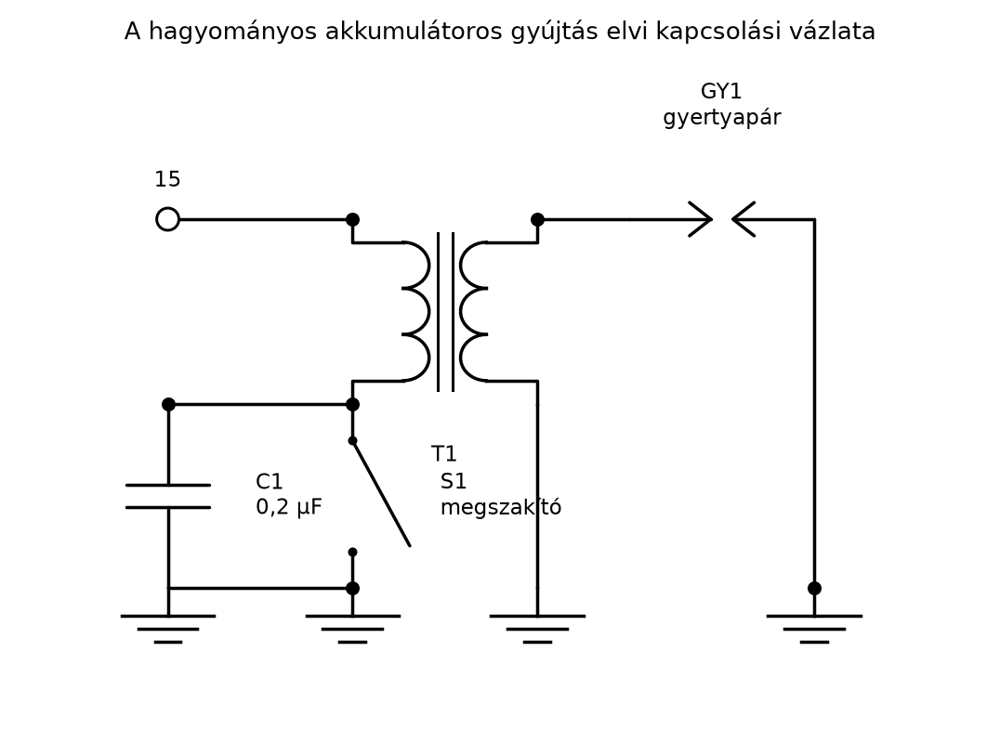

Az indítómotorral ellentétben a gyújtóberendezés nem a 12 V-ot kapcsolja közvetlenül a hengerbe, hanem rövid időre egy több tízezer voltos feszültségcsúcsot állít elő. Ha ezt a láncot elemeire bontjuk, a hibakeresés célzott lesz, nem próbálgatás.
Egy műhelyben gyakori ügyfélpanasz: „az autó rosszul indul, terhelés alatt rángat, és a hibakód szerint a 2. hengeren gyújtáskimaradás van”. A szerelőnek el kell döntenie, hogy a gyertya, a gyújtókábel, a gyújtótekercs vagy a vezérlés hibás. Ehhez pontosan értenie kell, hogyan keletkezik a gyújtófeszültség, és mi a különbség egy régi megszakítós, egy elektronikus elosztós és egy korszerű, hengerenkénti tekercses rendszer diagnosztikája között. A gyújtás hibája üzemanyag-túlfogyasztást, katalizátor-károsodást és a műszaki vizsgán emissziós bukást okozhat.
Képzelj el egy közös vasmagon két tekercset: a primer tekercsre 12 V jut, a szekunder tekercsen pedig a gyertyapárra kapcsolt nagyfeszültség jelenik meg. A primer áram megszakításakor a mágneses fluxus hirtelen összeomlik, és a nagy menetszámú szekunder tekercsben rövid feszültségcsúcs indukálódik. A gyújtótekercs tehát nem folyamatosan ad nagy feszültséget, hanem csak a megszakítás pillanatában; a gyertya szikrája ennek a tárolt mágneses energiának az átalakulása.
Az alábbi kapcsolási vázlat a hagyományos akkumulátoros gyújtás elvét mutatja.

A rajzon a primer kör a 15-ös kapocsról a gyújtótekercs primer tekercsén, majd a megszakítón keresztül a test felé záródik. A megszakítóval párhuzamosan kötött kondenzátor csökkenti a megszakító érintkezőin keletkező ívet, és a primer oldali rezgőkörrel együtt a feszültség lefutását a kívánt alakúra hozza. A szekunder oldal a gyertyapárra kapcsolódik, ahol a nagyfeszültség átüti az elektródaközt.
A gyújtóberendezés feladata, hogy a kompresszió végén, a gyújtási időpontban megbízható szikrát adjon az égéstérben. Ehhez több jellemzőt használunk.
Definíció. Gyújtófeszültség. A gyújtótekercs szekunder oldalán megjelenő, a gyertyapár átütéséhez és a szikrakisüléshez szükséges feszültségcsúcs. Értéke jellemzően 10–30 kV, de gyenge keverék vagy nagy töltőnyomás esetén magasabb is lehet (ellenőrizendő: gyártói adat).
Definíció. Szikraenergia. A gyertyaközben leadott villamos energia. Közelítőleg a primer tekercsben tárolt mágneses energia átadott része:
ahol a primer tekercs induktivitása, pedig a megszakítás pillanatában folyó primer áram. A gyakorlatban a gyújtórendszer akkor jó, ha a szikraenergia elég a keverék meggyújtásához; szemléltető tanulási érték 30–100 mJ (ellenőrizendő: gyártói adat).
Definíció. Gyújtófeszültség keletkezése. Ha a primer áramot hirtelen megszakítjuk, a primer tekercsben az önindukció miatt feszültségcsúcs lép fel. Ez a primer tekercs menetein jellemzően 200–400 V. A közös vasmag révén a szekunder tekercsben a menetszámok arányában nagyobb feszültség indukálódik:
Ha például a primer csúcsfeszültség és a menetszámáttétel , akkor . Ha a gyertyapár átütési feszültsége ennél alacsonyabb, a szikra létrejön, és a szekunder feszültség az ív fennmaradásához szükséges értékre esik le.
Összefüggés. A tényleges gyújtófeszültség nem független a gyertyapártól: annyi feszültség jelenik meg, amennyi a szikraköz átütéséhez kell, plusz a kábelek, valamint a tekercs belső ellenállásának vesztesége. Ezért a nyitott gyújtókábel vagy a túl nagy hézag magasabb feszültséget, a kopott, rövidre zárt gyertya pedig alacsonyabb feszültséget eredményez.
Definíció. Zárásszög. Az az időtartam, amíg a primer áram folyik a gyújtótekercsben, főtengely-szögben vagy a gyújtási szakasz százalékában kifejezve. A primer tekercs RL-körként viselkedik: az áramerősség időállandóval növekszik, és a végső értékhez közelít. Ha a zárási idő túl rövid, a primer áram nem éri el a teljes értéket, ezért a szikraenergia csökken.
Definíció. Gyújtásszög. Az a forgattyústengely-szög, amely megadja, hogy a kompresszió felső holtpontja előtt hány fokkal születik a szikra. A gyújtásszöget fordulatszám, terhelés, hőmérséklet és kopogásérzékelő jel alapján módosítja a vezérlés.
A gyújtórendszer főbb részei: áramforrás (akkumulátor vagy mágnes), gyújtótekercs, kapcsolóelem (megszakító, tranzisztor vagy tirisztor), elosztó vagy elosztás nélküli rendszer, valamint a gyújtógyertya és a gyújtókábel. A hagyományos rendszerben mechanikus előgyújtás-szabályozó is van; a modern elektronikus rendszerekben ezt a motorvezérlő ECU szoftvere végzi.
A gyújtórendszereket a kapcsolóelem és az elosztás módja szerint csoportosítjuk. Az alábbi sorrend a régebbitől halad a korszerű felé; a műhelyben mindegyik előfordulhat.
A megszakítós rendszerben a primer áramot mechanikus megszakító szakítja meg, amelyet a gyújtáselosztó tengelyén lévő bütyök nyit. A primer kör zárásakor a tekercsben áram kezd kialakulni. Amikor a bütyök nyitja a megszakítót, a primer áram hirtelen megszakad, és a szekunder oldalon nagy feszültség indukálódik. Az elosztó a nagyfeszültséget a gyújtási sorrend szerint a megfelelő henger gyertyájához irányítja.
A megszakítóval párhuzamos kondenzátor szerepe kettős: csökkenti az érintkezők ívét, így lassítja a beégést, és a primer oldali rezgőkörrel együtt a feszültséggörbét olyan fázisba hozza, hogy a szekunder feszültségmaximum a gyújtószikra számára kedvező pillanatban keletkezzen. Ha a kondenzátor hibás vagy rossz kapacitású, a szekunder feszültség alacsony lesz, és a megszakító gyorsan tönkremegy.
Jellemzők. A hagyományos rendszer mechanikai kopásnak van kitéve: a megszakító érintkezői beégnek, a bütyökkenés elnyomódik, a gyújtásszög és a zárásszög fokozatosan elállítódik. A primer áram jellemzően 3–5 A, mert a megszakító nagyobb áramot nem tud megbízhatóan megszakítani. A zárásszöget hézagmérővel és mérőműszerrel kell beállítani (ellenőrizendő: gyártói adat).
A tranzisztoros rendszerben a megszakító nem közvetlenül a primer áramot szakítja meg, hanem csak egy tranzisztor bázisát vezérli. A tranzisztor kapcsolóüzemben dolgozik: amikor a megszakító zárt, a tranzisztor telítésbe kerül és a primer áram folyik; amikor a megszakító nyitott, a tranzisztor lezár, és a gyújtótekercsben a szükséges feszültségcsúcs jön létre.
Előnyök. A megszakító érintkezőin csak néhány száz mA folyik, ezért hosszú az élettartama. A primer áramot 7–9 A-re lehet növelni, mert a tranzisztor jobban terhelhető. A rendszer azonban még mindig mechanikus jeladót használ, így a kopás nem szűnik meg teljesen. Ez az átmeneti megoldás főleg a múlt század 1970-es és 1980-as éveinek járművein található.
Az elektronikus gyújtásnál a mechanikus megszakítót érintkezésmentes jeladó váltja fel: induktív jeladó, Hall-jeladó vagy optikai jeladó. A jeladó jele a gyújtásvezérlő egységbe kerül, amely a primer áramot végfokozaton keresztül kapcsolja.
A rendszer még használhat gyújtáselosztót, de a zárásszöget és az alap gyújtásszöget elektronika állítja elő, a mechanikus előgyújtás-szabályozókat elhagyják. A jellemző előny: kevesebb kopó alkatrész, pontosabb gyújtásszög, nagyobb primer áram (8–12 A), ezáltal nagyobb szikraenergia.
Fontos. Az induktív és Hall-jeladó jeleit a későbbi diagnosztikai alfejezetek oszcilloszkópos vizsgálatainál is mérjük, ezért a jelalakok ismerete a Gyújtásvizsgálat és oszcilloszkópos gyújtásdiagnosztika alfejezetben tér vissza.
A teljesen elektronikus rendszerekben nincs mechanikus elosztó. A nagyfeszültség-elosztást vagy a gyújtótekercsek csoportosítása, vagy hengerenkénti tekercs oldja meg.
Elosztó nélküli, kétszikrás (páros) tekercses változat (angolul wasted spark). Egy kétszikrás gyújtótekercs – két nagyfeszültségű kivezetéssel – két hengert lát el olyan hengerpároknál, amelyek dugattyúi egyszerre mozognak (pl. 1–4 és 2–3); a szekunder tekercs két vége egy-egy gyertyához kapcsolódik, a szikra a két gyertyán sorosan üt át. A gyújtás mindkét hengerben egyszerre történik: az egyik hengerben a kompresszió végén valódi gyújtás, a másikban a kipufogóütemben „pazarló szikra” jön létre. Ez a szikra ártalmatlan, mert ott nincs gyulladóképes keverék.
Hengerenkénti gyújtótekercs (coil-on-plug, COP). Minden hengernek saját gyújtótekercse van, gyakran közvetlenül a gyertyán. Ez a leggyakoribb megoldás a korszerű benzinmotoroknál. Előnyök: nincs gyújtókábel, kevesebb nagyfeszültségű veszteség, nagyon pontos hengerenkénti gyújtásszög, nagy szikraenergia és gyors diagnosztikai jel.
Az ábrán a motortéri ismertetőjegyek láthatók: elosztós rendszernél egy tekercs, elosztófej és négy gyújtókábel; páros tekercsnél egy tekercsblokk két kimenetpárral (1–4 és 2–3); coil-on-plug rendszernél a gyertyafuratban ülő tekercsek, amelyekhez csak kisfeszültségű kábelköteg fut. A HTML-változatban a kivitelek között váltani lehet, és mindegyikhez megjelenik a mérési tudnivaló.
A vezérlést a motorvezérlő ECU végzi a fordulatszám, a terhelés, a motorhőmérséklet és a kopogásérzékelő jelei alapján. A kopogásszabályozás hengerenként visszaveszi a gyújtásszöget, ha kopogásos égést érzékel. A VZ-rendszerek nagy része integrált gyújtásbefecskendezés-motronic rendszer, ahol a benzinbefecskendezés és a gyújtás közös vezérlőegységben fut.
A HKZ-rendszerben a gyújtóenergiát nem a gyújtótekercs primer mágneses tere tárolja hosszabb zárási idő alatt, hanem egy kondenzátort rövid idő alatt magas feszültségre töltenek, majd a gyújtótekercs primer oldalára egy tirisztor kisüti.
A felépítés: a fedélzeti 12 V-ot egy kis DC/DC átalakító 300–500 V-ra emeli, és feltölti a kondenzátort. A gyújtási időpontban a tirisztor vezetni kezd, a kondenzátor hirtelen kisül a primer tekercsen, és a nagyfeszültség a szekunderen létrejön. A szikra nagyon rövid, de nagy energiacsomagot ad. Előnye, hogy nagyon magas fordulatszámon is stabil a szikra, mert nincs hosszú zárási idő fenntartása. Hátránya, hogy a rövid szikraidő alatt esetenként rosszabb a keverékgyújtás; a modern rendszerekben ezért kombinált gyújtások is előfordulnak. A HKZ-ben a tirisztor kapcsolása a Tranzisztorok, tirisztorok és optoelektronika alfejezetben tanult reteszelő viselkedésre épül.
A mágnesgyújtás önálló energiaforrással rendelkezik, ezért nem igényel akkumulátort. Kis Otto-motorokon, régi motorkerékpárokon, láncfűrészeken, hajómotorokon és néhány régi gépkocsiban találkozhatunk vele. A forgó állandómágnes a tekercs mágneses terét periodikusan változtatja, és a primerkör megszakításakor a szekunderben gyújtófeszültség indukálódik. Az MHKZ (mágneses kondenzátoros nagyfeszültségű gyújtás) ezt elektronikus gyújtásszög-vezérléssel és érintésmentes kioldással ötvözi.
Megjegyzés. A mágnesgyújtás vizsgálatakor is ugyanaz a szabály: a nagyfeszültségű részt nem szabad áram alatt megérinteni, és az ellenőrzéshez csak megfelelő szikratesztelőt használjunk.
A gyújtógyertya feladata, hogy a nagyfeszültségű áramkör zárását a hengertérben lévő szikraközön tegye lehetővé, és a szikra energiáját az égéstérbe juttassa. Három fő része van: a közép-elektróda, a testelektróda és a kerámia szigetelő.
Definíció. Hőérték. Azt fejezi ki, hogy a gyertya milyen gyorsan vezeti el a hőt a kerámián és a meneten keresztül a hengerfej felé. A „meleg” gyertya lassabban ad le hőt, így magasabb hőmérsékleten tartja a szigetelőcsúcsot; a „hideg” gyertya gyorsan hőt ad le. Nagy terhelésű, feltöltött motorba hidegebb gyertyát választunk, városi üzemű motorba melegebbet. A helytelen hőértékű gyertya tünetei: a túl meleg gyertya okozhat öngyulladást, a túl hideg gyertya elszenesedik és gyújtáskihagyást okoz. A pontos gyertyatípust a járműgyártó katalógusa adja; a hőérték-jelölés gyártónként eltér, ezért soha ne cseréljük csak „hasonló méretűre”.
Definíció. Elektródahézag. A közép- és testelektróda közötti távolság. A gyújtófeszültség-igény a hézaggal nő. A gyakori érték 0,7–1,2 mm, de egyes korszerű motoroknál 1,3–1,5 mm is lehet (ellenőrizendő: gyártói adat). A hézagot huzalos (drótos) hézagmérővel ellenőrizzük; a központi elektródát feszíteni tilos.
Az (a) metszeten a középelektróda, a beégetett ellenállás és a csatlakozócsap a kerámia szigetelő furatában fut, a fémházat a tömítőgyűrű és a menet köti a hengerfejhez; a (b) részen a helyes mérés huzalos hézagmérővel és a testelektróda hajlításával történik, a (c) sor pedig a kiszerelt gyertya négy jellegzetes képét és a lehetséges okokat mutatja. A HTML-változatban az alkatrészek rámutatásra kiemelődnek, a gyertyaképekhez kattintásra megjelenik az ok és a teendő.
A gyújtókábel a nagyfeszültséget az elosztótól vagy a gyújtótekercstől a gyertyához vezeti. Szigetelése szilikon vagy EPDM, és gyakran beépített zajszűrő ellenállást tartalmaz, amely csökkenti a rádiófrekvenciás zavarokat. A kábel ellenállása méterenként néhány kΩ (szemléltető érték; ellenőrizendő: gyártói adat). A megnövekedett ellenállás vagy a szigetelés sérülése gyújtáskimaradást okozhat.
Egy gyújtótekercs primer induktivitása , a megszakítás pillanatában folyó primer áram . Számítsd ki a primer tekercsben tárolt energiát!
Számítás. A tárolt energia:
Ha a primer csúcsfeszültség és a menetszámáttétel , akkor a szekunder feszültség elvi maximuma . A valóságban a tekercs és a kábel veszteségei miatt ennél kisebb, de a gyertyapár átütésére elegendő 12–20 kV is kialakulhat. ∎
Egy tranzisztoros gyújtás primer ellenállása , induktivitása , a tápfeszültség . A motor fordulatszáma olyan, hogy a zárási idő . Mekkora áram folyt a megszakítás pillanatában?
Adott: , , , . Keresett: .
Az RL-kör áramerőssége:
Az időállandó:
A végső áram:
Behelyettesítve:
Az exponenciális tag , így:
Az energia pedig:
Ellenőrzés: a zárási idő 5 ms, az időállandó 6,25 ms; nem érjük el a végső 15 A-t, ami reális. ∎
Az ábrán a folytonos görbe a 2. példa, a szaggatott a 3. feladat áramát mutatja; a pontozott vízszintes vonal a végső áram, a függőleges vonal a megszakítás pillanata. A HTML-változatban a feszültség, az ellenállás, az induktivitás és a zárási idő (vagy a fordulatszám és a zárás aránya) csúszkával állítható: jól látszik, hogy magas fordulaton a rövidebb zárási idő miatt kisebb a megszakításkori áram, és négyzetesen csökken a szikraenergia.
Egy megszakítós rendszerben a gyártó szerinti kondenzátor , de valaki -osat szerelt be. A tünet: a motor nehezen indul, a megszakító gyorsan beég, a szekunder feszültség alacsony. Hiba. A túl nagy kapacitás megváltoztatja a primer rezgőkör frekvenciáját, ezért a feszültségcsúcs később vagy kisebb meredekséggel alakul ki. A megszakító íve hosszabb ideig tart, ami beégést okoz. A helyes kapacitást a gyártói adat szerint kell visszaállítani.
A gyújtórendszer ellenőrzésekor a gyártói adat az elsődleges. Az alábbi ellenőrzőlista a gyakorlatban használt lépéseket foglalja össze.
Figyelem. Gyújtófeszültség veszélye. A szekunder oldali feszültség több tízezer volt, és fájdalmas áramütést okozhat, különösen nedves környezetben vagy beültetett szívritmus-szabályozóval (pacemakerrel) vagy defibrillátorral élő személynél: ilyen személy gyújtóberendezésen járó motor mellett ne dolgozzon (ellenőrizendő: a gyártói és a munkavédelmi előírás). Nagyfeszültségű részt csak kikapcsolt gyújtás mellett, megfelelő szigetelt szerszámmal és a gyártói eljárás szerint szabad megérinteni. A motor indítása közben a gyújtókábelt kézzel megközelíteni vagy szikrát „próbálni” tilos. Soha ne szakítsa meg a szekunder kört a gyújtás bekapcsolt állapotában, mert a tekercsben és a vezérlőben káros feszültségcsúcsok keletkezhetnek. A modern gyújtórendszerek primer oldali tranzisztorai is védőáramkört igényelnek, ezért a gyártó által előírt mérési pontokat használja.
Környezetvédelem. A kiégett gyertya és a sérült gyújtókábel nem veszélyes hulladék, de a szervizben gyűjtendő és a helyi hulladékkezelés szerint leadandó. A gyújtáskimaradás javítása csökkenti a kibocsátott szénhidrogéneket és a katalizátor terhelését, így a diagnosztika környezetvédelmi jelentőségű.
Egy 2006-os, szívó benzinmotoros autó ügyfele azt mondja, hogy reggelente nehezen indul, és alapjáraton periodikusan rángat. A műszer OBD-csatlakozón keresztül P0302 hibakódot (2. henger gyújtáskimaradás) rögzít. A szerelő először az élő adatokban ellenőrzi a 2. henger tényleges gyújtáskimaradás-számlálóját, majd megkeresi a 2. henger gyertyáját.
A vizsgálat során a gyertya elektródái erősen kopottak, a hézag 1,8 mm (a gyártói érték 1,0 mm), a gyújtókábel burkolata repedezett. A kábel ellenállása 35 kΩ, míg a többi kábel 6–8 kΩ. A szerelő kicseréli a gyertyákat a gyártó által előírt hőértékűre, beállítja a hézagot 1,0 mm-re, és kicseréli a gyújtókábelt. A hibakódot törli, próbaúton ellenőrzi, hogy a gyújtáskimaradás-számláló nem növekszik. A tanulság: a több henger egyidejű gyertyacseréje ilyen korban normál karbantartás, mert a többi gyertya is hasonló kopásban van.
Hibás gyertyatípus alkalmazása. A szerelő csak a menetméretet nézi, a hőértéket nem. A túl hideg gyertya elszenesedik, a túl meleg gyertya öngyulladást okozhat. Helyes gyakorlat: mindig a járműgyártó katalógusából, alvázszám alapján válasszon gyertyát.
A gyertyahézag erőszakos beállítása. A közép-elektródát fogóval vagy csavarhúzóval feszítik, ami megrepeszti a kerámia szigetelőt. Helyes gyakorlat: a hézagot csak a hajlított testelektródán, huzalos hézagmérővel, a gyártó tűrésén belül állítani.
Gyújtófeszültség ellenőrzése kézzel. A kábelt kirántva „nézni, van-e szikra” életveszélyes, és a modern elektronikában a vezérlőt is károsíthatja. Helyes gyakorlat: szikratesztelő, oszcilloszkópos szekunder mérés vagy a gyártói diagnosztikai eljárás.
A megszakítós rendszerben a kondenzátor szerepének figyelmen kívül hagyása. Ha a kondenzátor rossz, a megszakító beég. Helyes gyakorlat: a gyújtás beállításánál kapacitásmérést is végezni.
Gyújtókábel-ellenállás mérés elhagyása. A kábel szigetelése kívülről épnek tűnik, de a belső szénszálas zajszűrő szakadt; a tünet gyújtáskihagyás. Helyes gyakorlat: a kábel ellenállását minden gyújtáskimaradásos panasznál multiméterrel mérni.
Igaz vagy hamis? A gyújtótekercs szekunder feszültsége független a primer áram megszakítási sebességétől. Indokolj!
Számítsd ki, mekkora energiát tárol a gyújtótekercs primer tekercse, ha és .
Egy gyújtórendszeren a zárási időt a fordulatszám növekedése csökkenti. Miért csökkenhet a szikraenergia magas fordulaton, ha a zárásszög állandó?
Rajzold le szavakkal a hagyományos megszakítós gyújtás primer körét, és nevezd meg a kondenzátor két feladatát!
Mi a hiba ebben a leírásban? „A gyertyahézagot 3 mm-re állítottam, mert így nagyobb a szikra.” Miért veszélyes?
1. feladat (A)
Definiáld a gyújtófeszültséget, a szikraenergiát, a zárásszöget és a
gyújtásszöget!
2. feladat (A)
Egy gyújtótekercs primer induktivitása
,
a megszakítás pillanatában folyó áram
.
Számítsd ki a primer energiát és a becsült szekunder
feszültségmaximumot, ha a primer csúcsfeszültség
és a menetszámáttétel
!
3. feladat (B)
Egy tranzisztoros gyújtás primer ellenállása
,
induktivitása
,
tápfeszültsége
.
A zárási idő
.
Számítsd ki az áramot a megszakítás pillanatában, és a tárolt
energiát!
4. feladat (B)
Értelmezd a fenti kapcsolási vázlatot! Azonosítsd a primer kört, a
szekunder kört, a 15-ös kapcsot, a megszakítót és a kondenzátort.
Magyarázd el, mi történik, amikor az S1 megszakító nyit!
5. feladat (C)
Hasonlítsd össze a hengerenkénti gyújtótekercses (COP) rendszert az
elosztó nélküli, páros tekercses (wasted spark) rendszerrel! Melyik ad
pontosabb hengerenkénti gyújtásszöget, és miért?
6. feladat (D)
Egy 4 hengeres motor 3. hengerén a diagnosztikai műszer
gyújtáskimaradást jelez. A gyertyapár hézagát 1,0 mm-re állítva a szikra
erős, de a gyertyán lévő korom és a kábel ellenállása 60 kΩ (a másik
kábel 7 kΩ). Mi a legvalószínűbb hiba és mi a javítás?
Hamis. A szekunder feszültség nagysága a primer áram megszakítási sebességétől is függ: minél gyorsabban szakad meg a primer áram, annál nagyobb a primer csúcsfeszültség, így a szekunder feszültség is.
.
A primer tekercs RL-kör, az áram időállandóval növekszik. Ha a zárási idő rövid, az áram nem éri el a végső értéket, ezért a energia kisebb lesz. Magas fordulaton a zárási idő azért csökken, mert kevesebb idő áll rendelkezésre az egyes gyújtásokhoz.
A primer kör: 15-ös kapocs → gyújtótekercs primer tekercse → megszakító → test, ezzel párhuzamosan a kondenzátor. A kondenzátor feladata: csökkenti a megszakító ívét, és a primer rezgőkört a feszültségmaximumot a megfelelő időpontra hozza.
A 3 mm-es gyertyahézag túl nagy; a gyújtófeszültség igénye nagyon megnő, ami a tekercs és a kábelek szigetelését terheli, áramütés veszélyét növeli, és a gyertya élettartamát rontja. Helyes: a gyártó által megadott hézagot kell beállítani.
1. feladat (A)
A gyújtófeszültség a gyújtótekercs szekunder oldalán megjelenő
feszültségcsúcs, amely a gyertyapár átütéséhez és a szikrakisüléshez
szükséges. A szikraenergia a gyertyapárban leadott villamos energia,
amely közelítőleg a primer tekercsben tárolt mágneses energia. A
zárásszög az az idő, amíg a primer áram folyik; a gyújtásszög pedig a
felső holtpont előtti szög, amikor a szikra létrejön.
2. feladat (A)
Az energia:
A szekunder feszültségmaximum: . A valóságban a veszteségek miatt kisebb lehet, de elegendő a gyertya átütéséhez. ∎
3. feladat (B)
Időállandó:
.
Végső áram:
.
A zárási idő 4 ms, tehát:
Az exponenciális tag , így . Az energia:
Ellenőrzés: a zárási idő fél időállandó, ezért az áram jóval a végső alatt marad, az energia kisebb. ∎
4. feladat (B)
A 15-ös kapocs a gyújtáskapcsolás utáni 12 V-os betáp. A primer kör:
15-ös kapocs → gyújtótekercs primer tekercs → S1 megszakító → test; a C1
kondenzátor párhuzamosan van a megszakítóval. A szekunder kör: a
gyújtótekercs szekunder tekercse → GY1 gyertyapár → test. Amikor S1
nyit, a primer áram megszakad, a mágneses fluxus összeomlik, és a
szekunder tekercsben nagy feszültség indukálódik; a gyertyapáron szikra
keletkezik. A kondenzátor nélkül az S1-en erős ív keletkezne, és a
feszültségcsúcs kialakulása rosszabb lenne.
5. feladat (C)
A hengerenkénti gyújtótekercses (COP) rendszer pontosabb, mert minden
hengernek külön tekercse van, és a gyújtásszöget hengerenként, a
kopogásérzékelő jele alapján egyedileg lehet szabályozni. Nincs elosztó
és nincs gyújtókábel, így kisebb a nagyfeszültségű veszteség. A páros
tekercses (wasted spark) rendszer két hengert lát el egy tekercsével; az
egyik hengerben hasznos, a másikban pazarló szikra van. Emiatt a
hengerenkénti gyújtásszög nem függetleníthető a hengerpártól. A
különbség a magas kipufogógáz-visszavezetés és a feltöltött motorokon
jelentős, ahol a pontos gyújtásszög kritikus.
6. feladat (D)
A gyertyán lévő korom és a 60 kΩ-os gyújtókábel-ellenállás a
nagyfeszültségű energiaveszteség jele. A legvalószínűbb hiba a
gyújtókábel belső szakadása vagy erősen megnövekedett ellenállása, ami
miatt a szikraenergia a 3. hengeren nem éri el a megbízható gyújtáshoz
szükséges értéket. A javítás: a gyújtókábel cseréje a gyártói előírás
szerint, a gyertya tisztítása vagy cseréje, majd a
gyújtáskihagyás-számláló ellenőrzése próbaúton. Ha a hengerben korom
van, a gyertya hőértékét is ellenőrizni kell.
A gyújtóberendezés a benzinmotor hengerében a kompresszió végén nagyfeszültségű szikrát hoz létre. A primer áram megszakításakor a gyújtótekercsben a mágneses fluxus összeomlik: a primer oldali önindukciós feszültség , a szekunder feszültség pedig a menetszámok arányában növekszik. A szikraenergia közelítőleg . A gyújtórendszer fő jellemzői a gyújtófeszültség, a szikraenergia, a zárásszög és a gyújtásszög. A hagyományos megszakítós rendszerben a kondenzátor csökkenti az érintkezők ívét; a tranzisztoros rendszer a megszakítót tehermentesíti; az elektronikus EZ érintésmentes jeladóval dolgozik; a teljesen elektronikus VZ elosztó nélküli vagy hengerenkénti tekercses. A HKZ kondenzátorkisütéssel, a mágnesgyújtás önálló mágneses forrással működik. A gyújtógyertya hőértéke és hézaga a megbízható égés kulcsa; a gyújtókábel ellenállása ellenőrizendő. A nagyfeszültségű oldal életveszélyes, csak szigetelt szerszámmal és a gyártói eljárás szerint dolgozhatunk. Továbbvitt eredmény. A gyújtási folyamat ezen ismerete a Gyújtásvizsgálat és oszcilloszkópos gyújtásdiagnosztika alfejezetben tér vissza, ahol a primer és szekunder jelalakokat, a zárásszög és a gyújtásszög mérését oszcilloszkóppal végezzük el.